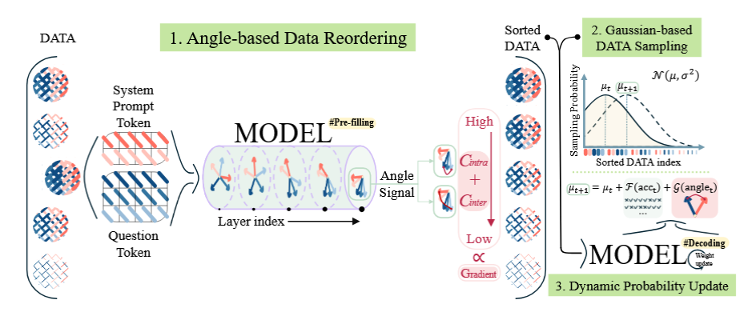
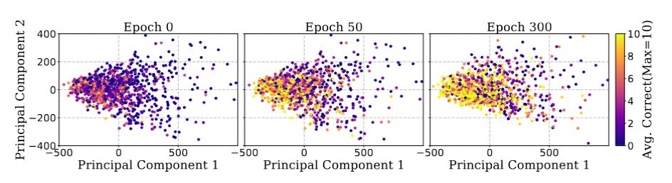

Literature Review: Angles Don't Lie: Unlocking Training-Efficient RL Through the Model's Own Signals
Standard RFT paradigms are notoriously sample-inefficient and computationally exorbitant, often involving redundant exposure to identical queries and expensive decoding steps. This paper proposes GAIN-RL (Gradient-driven Angle-Informed Navigated RL), a framework that shifts the paradigm from heuristic curriculum learning to a model-intrinsic approach. By identifying that the cosine similarity (angle concentration) between token hidden states directly correlates with gradient magnitude and learning potential, the authors develop a sampling strategy that accelerates training by over 2.5x while requiring significantly less data.
Key Insights
-
Angle Concentration as a Gradient Proxy The core theoretical contribution is the reformulation of the Frobenius norm of the gradient. The authors demonstrate that the gradient norm with respect to weights is directly influenced by the cosine similarity between token hidden states during the forward pass. \(||\nabla_{W}\mathcal{L}||_{F}^{2} \propto \sum \sum ||x_i|| ||x_j|| \cos \theta_{i,j}\) This implies that “angle concentration” serves as a computationally cheap proxy for the gradient norm. High angle concentration indicates a stronger learning signal (larger gradient updates), whereas low concentration suggests weaker updates.
-
Layer-wise and Data-wise Concentration Patterns Through empirical observation, the paper identifies distinct patterns in how LLMs process information.
- Layer-wise: Models exhibit a “segment-wise” clustering where initial layers are dominated by input embeddings, but deeper layers show strong intra-segment (within the question) and inter-segment (question-to-prompt) clustering. The final layer shows the highest convergence, making it the ideal location to measure the signal.
- Data-wise: There is a natural curriculum where the model preferentially learns samples with higher angle concentration first. This contradicts some traditional curriculum learning heuristics that might prioritize “easy” samples based on external metrics; here, “easy” is defined intrinsically by the model’s internal alignment.
- Dynamic Gaussian Sampling (GAIN-RL) Instead of static data loading, GAIN-RL introduces a dynamic probability update mechanism.
- Pre-training: Data is reordered based on the combined angle signal ($\mathcal{C}{intra} + \mathcal{C}{inter}$).
- During Training: A Gaussian distribution governs sampling. Initially, the mean $\mu$ is set to prioritize high-concentration data. As training progresses and accuracy improves, $\mu$ shifts, guiding the model toward lower-concentration (harder) samples. This ensures the model constantly trains on data that provides the most impactful gradient updates at that specific moment in time.

Figure 1: Overview of the GAIN-RL framework. The process involves pre-filling to rank data by angle signal, followed by Gaussian-based sampling that dynamically shifts based on epoch-wise accuracy and angle signals.
Example
Consider training a model on the GSM8K mathematical reasoning dataset. In a standard setting like GRPO, the model might randomly sample difficult problems early in training, perform expensive Chain-of-Thought decoding, receive a low reward, and generate high-variance, noisy gradients that contribute little to convergence.
Using GAIN-RL:
- Pre-fill: Before training starts, the untrained model runs a single forward pass (pre-fill) on the dataset. It calculates the cosine similarity of the final layer tokens.
- Ordering: It finds that Question A has high angle concentration (the model “understands” the structure, even if it can’t solve it perfectly yet), while Question B has very low concentration.
- Epoch 1: The sampler prioritizes Question A. The model generates a solution, likely getting a strong, clean gradient update because the internal representation is already partially aligned.
- Adaptation: As the model masters high-concentration questions, the average accuracy metric rises. The Gaussian sampler’s mean shifts, now introducing Question B. By this time, the model’s weights have updated sufficiently that Question B’s internal representation is likely more concentrated than it was at step 0, making it now ripe for learning.
Ratings
Novelty: 4.5/5 The derivation linking cosine similarity of hidden states directly to gradient norms offers a mechanically grounded perspective on curriculum learning.
Clarity: 5/5 The paper read extremely well for me. The mathematical proofs are accessible for the most part, and the logical flow from the theoretical bound of the gradient norm to the empirical observation of attention sinks and angle clustering is clean with visualizations to help understand the logical flow.
Personal Perspective
This is a really solid paper. The explicit mathematical connection between gradients and cosine similarity is really interesting, particularly as it provides a rigorous motivation for why decoding can be sidestepped for data selection. Using the model’s own “pre-fill” signals to predict learnability has profound implications beyond just reinforcement fine-tuning.
I find the potential connections to the Linear Representation Hypothesis especially exciting. The reliance on cosine similarity suggests this work touches on fundamental properties of the residual stream and linear matrix projections in Transformers. If these angle-based signals are robust proxies for semantic coherence and learnability, this methodology could extend to data attribution and interpretability research. It effectively opens a door to removing decoding from the core training loop for tasks other than final validation, which could drastically reduce the compute overhead for alignment and attribution tasks. Furthermore, the visualization of neuron activation patterns converging with accuracy (Figure 6) provides a nice empirical validation of the theoretical claims, grounding the abstract math.

Figure 2: Relationship between neuron activation patterns and accuracy over training. The clustering of activation patterns correlates strongly with model performance, visualizing the "specialization" of neurons as training progresses.
Enjoy Reading This Article?
Here are some more articles you might like to read next: